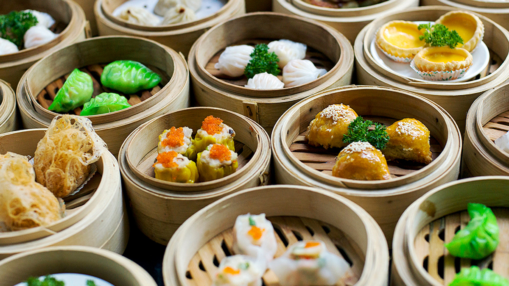

Công Thức Dim Sum Hấp
Các món dim sum hấp như há cảo, xíu mại, thơm ngon và dễ làm tại nhà.
Nguyên Liệu
- 200g tôm sú (bóc vỏ, băm nhuyễn)
- 200g thịt heo băm
- 20 vỏ há cảo (mua sẵn hoặc tự làm)
- 1 muỗng canh dầu mè
- 1 muỗng canh nước tương
- 1 muỗng cà phê bột bắp
- 1 củ cà rốt (thái hạt lựu nhỏ)
- 2 nhánh hành lá, băm nhỏ
- 1 muỗng cà phê gừng băm
- 1 muỗng cà phê đường
- Nước tương, dầu ớt để chấm
Cách Làm
- Trộn tôm, thịt heo, cà rốt, hành lá, gừng, dầu mè, nước tương, bột bắp, đường.
- Đặt 1 muỗng nhân vào giữa vỏ há cảo, gấp mép tạo hình nếp hoặc vo thành xíu mại.
- Lót lá chuối hoặc giấy nến vào xửng hấp, xếp dim sum lên trên.
- Hấp trong nồi nước sôi khoảng 8-10 phút đến khi chín.
- Dọn dim sum nóng với nước tương và dầu ớt.
Mẹo Nấu Ngon
- Băm tôm và thịt thật nhuyễn để nhân mịn và kết dính.
- Không hấp quá lâu để tránh vỏ há cảo bị rách.
- Thêm chút dầu ớt tự làm để tăng hương vị.